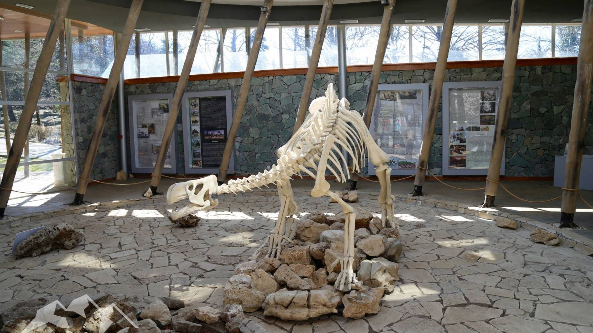

КУТАИСИ И ДРЕВНЯЯ ИМЕРЕТИЯ
Имеретия — самый большой регион Грузии с населением более полумиллиона человек. Имеретия расположена в бассейне реки Риони, самой крупной в Грузии. Имеретинцы своим радушием и гостеприимством выделяются даже на фоне потрясающих тбилисцев. Будучи в Имеретии, обязательно попробуйте местное вино — оно довольно сильно отличается по вкусу и по технологии производства от вин Кахетии, другого крупнейшего винного региона Грузии — а также имеретинский сулугуни и хачапури по-имеретински с этим сыром.
День 1: Тбилиси, переезд в Кутаиси (по дороге смотрим столп Кацхи)
День 2: Кутаиси
День 3: Монастыри Моцамета и Гелати, парк Сатаплиа
День 4: Цхалтубо и пещера Прометея
День 5: Мартвильский монастырь и каньон
День 6: Каньон Окаце и водопад Кинчха
День 7: Рача (Амбролаури, Хванчкара..)
ДЕНЬ 1: ДОРОГА ИЗ ТБИЛИСИ В КУТАИСИ
По пути можно осмотреть скальный городУплисцихе, музей Сталина и столп Кацхи. Столп Кацхи (Кацхийский столп). Одна из относительно «новых» религиозных достопримечательностей Грузии, но уже успевшая стать одним из ее символов. Потрясающе живописный узкий известняковый монолит, на вершине которого расположен домик монаха-отшельника. Напоминает уменьшенную версию греческого монастыря Метеора.
ДЕНЬ 2: КУТАИСИ
Неофициальная вторая столица Грузии — в которой вполне официально с 2012 года располагается парламент страны.
Что посмотреть в Кутаиси: Храм Баграта, рынок, канатная дорога, еврейский квартал, исторический музей, парк Брдзенишвили, парламент Грузии, площадь Давида Строителя.
ДЕНЬ 3: МОНАСТЫРИ МОЦАМЕТА И ГЕЛАТИ, ЗАПОВЕДНИК САТАПЛИЯ
Гелатский монастырь (Гелати) — один из самых почитаемых православных монастырей Грузии, Гелатский монастырь был основан царем Давидом Агмашенебели (Строителем) — и в нем же великий царь позднее был похоронен.
Согласно завещанию Давида, его останки покоятся под каменной плитой на входе в монастырский комплекс, и все прихожане волей-неволей «попирают ногами» прах монарха.
Монастырь Моцамета. Название Моцамета означает «мученики», он посвящен святым князьям-мученикам Давиду и Константину Мхеидзе, которые были местными правителями. Потерпев поражение от арабов, братья отказались принять ислам и были сброшены в ущелье по приказу предводителя захватчиков Мурвана Глухого. Монастырь Моцамета расположен недалеко от Гелати, ближе к Кутаиси.
Заповедник Сатаплия.Заповедник, расположенный на горе над рекой Риони и известный прежде всего обнаруженными там следами динозавров. Название «Сатаплиа» означает «медовое место», раньше в этой местности в изобилии водились дикие пчелы.
ДЕНЬ 4: ЦХАЛТУБО И ПЕЩЕРА ПРОМЕТЕЯ
Цхалтубо. Некогда санаторно-курортный центр всесоюзного значения, а ныне застывший во времени городок. Рекомендую совместить его осмотр с посещением пещеры Прометея и парка Сатаплиа.
Пещера Прометея — самая большая из всех известных пещер Грузии, расположена неподалеку от Цхалтубо. Туристам для осмотра открыта лишь небольшая часть — 6 залов общей длиной 1400 метров.
ДЕНЬ 5: МАРТВИЛЬСКИЙ КАНЬОН И МОНАСТЫРЬ ЧКОНДИДИ
Мартвильские каньоны и Мартвильский монастырь. Хотя городок Мартвили расположен не в Имеретии, а в Мегрелии, ехать туда удобнее именно из Кутаиси. Мартвили известен своим очень живописным каньоном, возникшим благодаря водам реки Абаша, проложившим себе путь в скалах. Рекомендую совместить посещение каньона с Мартвильским монастырем Чкондиди — главной христианской обителью Мегрелии — и Салхино, летним дворцом мегрельских князей Дадиани. Из городка Мартвили к монастырю можно добраться с помощью канатной дороги.
ДЕНЬ 6: КАНЬОН ОКАЦЕ И ВОДОПАД КИНЧХА
Каньон Окаце — природная достопримечательность Имеретии, очень искусно улучшенная человеком. Дело в том, что живописный каньон реки Окаце (длина 3 км, глубина 50 м) оборудован подвесным консольным мостом, являющимся изумительной смотровой площадкой.
Кинчха — комплекс водопадов, среди которых есть и самый высокий в Грузии. Удобно осматривать заодно с Окаце.
ДЕНЬ 7: РАЧА (АМБРОЛАУРИ, ХВАНЧКАРА..)
Амбролаури — столица региона Рача-Лечхуми, «Грузинской Щвейцарии». Помимо волшебных пейзажей, Рача известная своими винами — например, знаменитой «Хванчкарой».